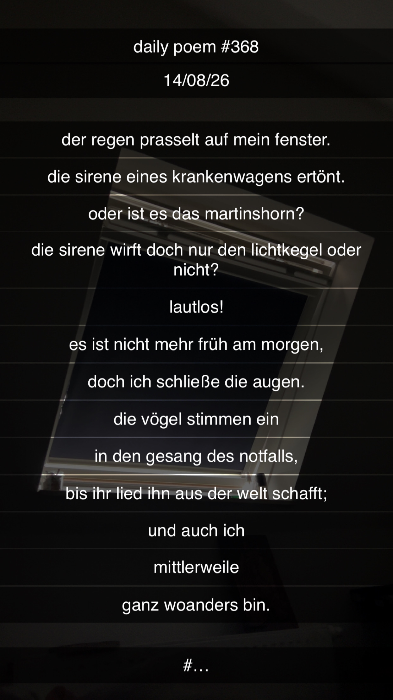

Der Regen prasselt auf mein Fenster
[368]Der Regen prasselt auf mein Fenster.
Die Sirene eines Krankenwagens ertönt.
Oder ist es das Martinshorn?
Die Sirene wirft doch nur den Lichtkegel oder nicht?
Lautlos!
Es ist nicht mehr früh am Morgen,
doch ich schließe die Augen.
Die Vögel stimmen ein,
in den Gesang des Notfalls,
bis ihr Lied ihn aus der Welt schafft;
und auch ich
mittlerweile
ganz woanders bin.
